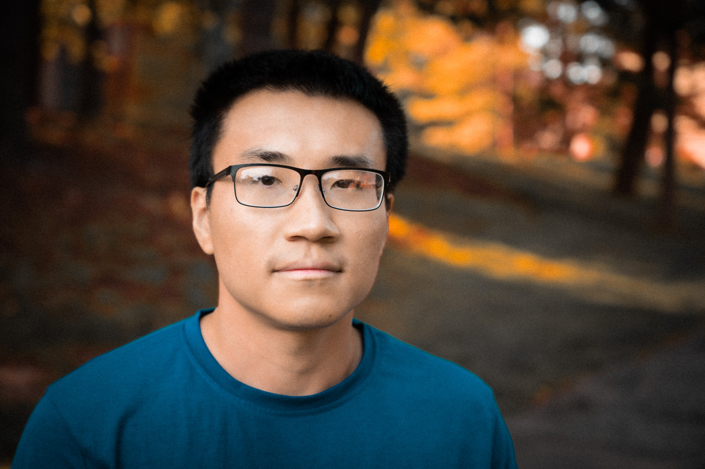

|

|
Chen LiComputer Vision, Machine Learning, Uncertainy estimation |
I am currently a PhD Candidate at the Department of Biomedical Informatics at Stony Brook University, advised by Prof.Chao Chen.
I obtained my PhD degree from the Department of Computer Science at Stony Brook University, advised by Prof.Chao Chen. During my PhD, I have also worked closely with Prof.Dimitris Samaras and Prof.Prateek Prasanna.
Before that, I obtained my master and bachelor degrees from Tsinghua University and Huazhong University of Science and Technology, respectively.
Research Interests: My research interest lies in the intersection of medical imaging, computer vision and machine learning. In particular, I am interested in:
-
- Topology-Driven Image Analysis
- Uncertainty Estimation and Its Applications
- Learning with Imperfect Data
Research Statement / CV / Scholar / Github
Tutorials
 |
Topology-Driven Image Analysis |
Selected Publications (Full Publications)
 |
Topology-Aware Uncertainty for Image Segmentation |
 |
Calibrating Uncertainty for Semi-Supervised Crowd Counting |
 |
Enhancing Modality-Agnostic Representations via Meta-Learning for Brain Tumor Segmentation |
 |
Learning Probabilistic Topological Representations Using Discrete Morse Theory |
 |
Confidence Estimation Using Unlabeled Data |
 |
Structure-Aware Image Segmentation with Homotopy Warping |
 |
Deep Statistic Shape Model for Myocardium Segmentation |
 |
Learning Topological Interactions for Multi-Class Medical Image Segmentation |
 |
Trigger Hunting with a Topological Prior for Trojan Detection |
 |
A Manifold View of Adversarial Risk |
 |
A Topology-Attention ConvLSTM Network and Its Application to EM Images |
 |
Topology-aware Segmentation Using Discrete Morse Theory |
 |
3D Topology-Preserving Segmentation with Compound Multi-Slice Representation |
 |
Topology-Preserving Deep Image Segmentation |
 |
Saliency detection based on integration of central bias, reweighting and multi-scale for superpixels |
{kind=link}
{kind=link}
{kind=link}
Awards
Industry Experience
|
|
Topology-Aware Image Segmentation |
|
|
Deep Shape Model Based Network |
|
|
Object Detection and Clothes Search |
Services
Reviewer for ICML, ICLR, NeurIPS, CVPR, ICCV, ECCV, AISTATS, MICCAI, AAAI etc.